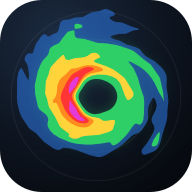

WatergawWatergaw collects no data about you.
Updated 17 November 2026. This covers the Watergaw website and Watergaw apps.
- No accounts and no sign-in.
- No ads, no analytics, no tracking and no cookies.
- No Watergaw servers. The website is plain files, and the radar is decoded on your own device.
- Nothing is sold or shared, because we have nothing to sell or share.
Your location
If you let Watergaw use your location, it is used on your device to center the map, pick the nearest radar and show what's coming your way. It is never sent to us. The only time any part of it leaves your device is to fetch a forecast from the National Weather Service, rounded to about 1 km (see Forecasts). You can turn location off at any time in your browser or phone settings, and Watergaw still works.
Alerts and widgets in the app
If you turn on warning or rain alerts, or add a Watergaw widget to your home screen, the app checks about every 30 minutes in the background. It uses where you last opened the app and your saved places, all stored on your phone. It never reads your location in the background. Each check downloads the national list of serious warnings and the newest files from the nearest radar, then works out everything else on your phone. Notifications are shown by your phone itself: there's no push service and no device ID.
Searching for towns and ZIP codes in the app works without the internet: the place list is built in, so what you type never leaves your phone.
Your settings and saved places
Settings, saved places and which alerts you've already seen are kept only on your device (in your browser's storage, or in the app's storage on your phone). Clearing the site's data or uninstalling the app deletes them.
Alerts for your places are checked on your device too. Watergaw downloads the full national list of warnings and compares it with your places itself, so the weather service never learns where your places are.
Where the weather and maps come from
Your device downloads public data straight from the services below. Like any website, each one can see your device's IP address when you load something from it. Watergaw doesn't send them anything about you.
| What | From |
|---|---|
| Radar | NOAA NEXRAD Level II and III, hosted on Amazon Web Services. The zoomed-out national view comes from the Iowa Environmental Mesonet. |
| Map | OpenFreeMap (OpenStreetMap data) |
| Warnings | National Weather Service (the whole national list, never asked for your spot) |
| Watches and storm tracks | Iowa Environmental Mesonet |
Layers you turn on load from their own sources: rain totals and hail and rotation tracks (NOAA MRMS on AWS, Iowa Environmental Mesonet), lightning (NOAA nowCOAST), hurricanes (National Hurricane Center), outlooks (Storm Prediction Center), storm reports (Iowa Environmental Mesonet), rivers (National Water Prediction Service), satellite (NASA GIBS), satellite basemap (Esri), wind (NOAA GFS and HRRR on AWS), earthquakes (USGS), wildfires (NIFC), aviation weather (NOAA Aviation Weather Center) and flight charts (FAA).
Forecasts
When Watergaw shows a forecast for a spot, such as the one-line forecast on the card for your location or a saved place, your device asks the National Weather Service for the forecast at that spot rounded to about 1 km. That's enough for their forecast grid, which is 2.5 km across, but not enough to point at a house. Alerts for the spot are found the same private way as above: Watergaw downloads the alerts for the whole county and checks the exact spot on your device.
Only when you ask
A few features need to send something to work. They only do it when you use them:
- Search for a place (website): the words you type go to Photon by komoot (OpenStreetMap data), with OpenStreetMap Nominatim as a backup.
- Turn on Flights (app): the rough area of the map you're looking at, rounded to about 25 km, goes to adsb.lol to find the planes there.
- Plan a drive: the start and end of the trip go to the OSRM route server (OpenStreetMap data). Forecasts along the way come from the National Weather Service, rounded the same way as above.
Place names you see when you tap the map ("12 mi NW of Waco") are worked out on your device from the map that's already loaded, so tapping sends nothing.
Hosting
The website is hosted on GitHub Pages. GitHub may keep visitors' IP addresses in its server logs for security; see GitHub's privacy statement. Apps are delivered through their app store, whose own privacy policy covers the download.
Children
Watergaw is fine for all ages. Since it collects nothing, it collects nothing from children either.
Changes and questions
If this ever changes, this page will say so first, with a new date. The code for the website is public, so anyone can check it: github.com/TheOnlyRealAgentP/watergaw. Questions are welcome as a GitHub issue.